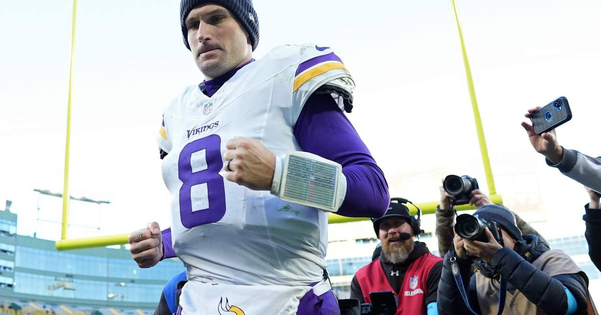

Kirk Cousins is back — and the Vikings are back with him in a 30-10 rout of the Packers at Lambeau
Five days after being reacquired from Las Vegas, Kirk Cousins threw two touchdowns in his first Vikings start since 2023 — on the same field where he tore his Achilles — as Minnesota routed Green Bay 30-10.

Disclosure: this post contains affiliate links. I earn a commission on qualifying purchases.
The night
Kirk Cousins' last start for the Minnesota Vikings ended with a torn Achilles at Lambeau Field in Week 8 of 2023. His first start back in purple came on the same field on Sunday — and this time, he walked off it a winner.
Cousins completed 21 of 31 passes for 207 yards and two touchdowns as the Vikings routed the Green Bay Packers 30-10 at Lambeau Field, five days after Minnesota reacquired him from the Las Vegas Raiders in a trade-deadline deal for a third-round pick. His voice cracked speaking with ESPN's Lindsey Thiry afterward as he reflected on the journey back.
The numbers weren't gaudy — a 94.4 passer rating, one interception — but the performance was exactly what the Vikings needed: calm, efficient, and mistake-free when it mattered. After just two practices with the team, it was called the Vikings' best quarterback performance of the season.
The moments
Cousins' first touchdown was the throw that announced he was home. On third-and-23 late in the first quarter, he dropped a perfectly placed pass to Myles Price for a 38-yard score and a 10-3 lead. His second came when the Packers were threatening to turn the game around: after Green Bay outgained Minnesota 158 to 26 in the third quarter to halve the lead, Cousins went 8-for-8 for 68 yards on the answering drive, capped by a 20-yard touchdown pass to Gavin Bartholomew for a 17-point lead with 8:29 remaining.
The defense did the rest. Minnesota forced four turnovers and sacked Jordan Love eight times — Levi Drake Rodriguez had two of them — and the Vikings held the ball for 35 minutes and 16 seconds. Green Bay's only touchdown came on a 32-yard pass to J. Michael Sturdivant in the third quarter, after Minnesota had already scored 49 straight points against the Packers across the two meetings this season.
The win was the Vikings' most points since their 39-22 shellacking of these same Packers in Week 1, and it completed the season sweep of the Border Battle — Minnesota's fifth win in six meetings with Green Bay. Head coach Kevin O'Connell recorded his 50th career victory.
What it means
The Vikings snapped a two-game losing streak, improved to 7-2, and joined the Detroit Lions and Chicago Bears in a three-way tie atop the NFC North. The quarterback situation that had defined their season — Kyler Murray out, Carson Wentz ineffective last week — suddenly looks solved, at least for now: the 38-year-old who started 88 games for the franchise from 2018 to 2023 is back in the No. 8 jersey, and the team that needed him most finally has him.
Next up is a four-game gauntlet that closes with the San Francisco 49ers on a neutral field in Mexico City on Sunday night. If Cousins plays like he did at Lambeau, the Vikings will like their chances in all four.
Gear up: Fanatics